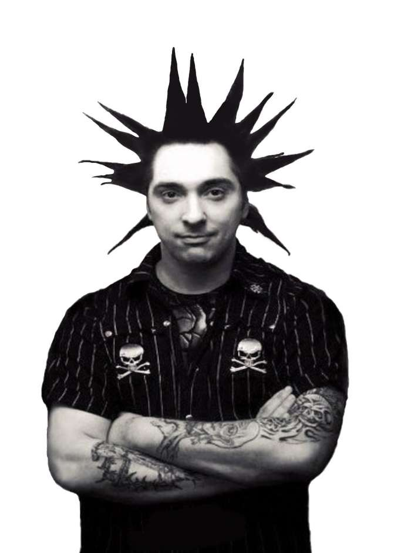

| Главная Состав группы Альбомы |
|

Михаил Горшенев – известный отечественный музыкант, основатель и идейный вдохновитель рок-группы «Король и Шут», композитор, автор музыки и некоторых текстов коллектива. Горшок в основном выступаел в роли злодеев. Настоящий панк Михаил Горшенев прожил недолгую, но яркую и насыщенную жизнь. Он как будто бы следовал девизу панков – живи быстро, умри молодым, ведь умереть в 39, на пике популярности и славы, это очень печально и несправедливо. Но, каждый сам выбирает свой путь и образ жизни, и это был его выбор, его осознанное решение. Назад |